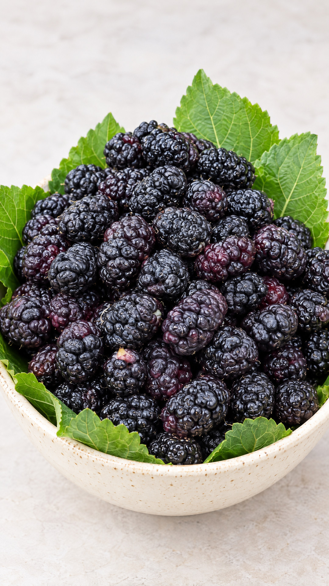

التوت الملكي
للسعر والعبوة والتوفر الحالي وتفاصيل التوصيل، استفسر عبر القنوات الرسمية للمتجر.

تفاصيل المنتج
التفاصيل المتاحة
تحقق من المعلومات التجارية النهائية لدى المتجر قبل الشراء.
- اسم المنتج
- التوت الملكي
- العلامة
- مزارع الثنيان
- العبوة والوزن
- استفسر عن الخيارات المتاحة
- السعر والتوفر
- تحقق من السعر والتوفر الحالي
- التوصيل
- راجع المناطق والرسوم والموعد مع المتجر
- الطلب
- استفسر من المتجر عن المنتج المتاح
قبل الطلب
تحقق من التفاصيل أولاً
اسأل عن المنتج المعروض حالياً، والسعر، والكمية، وخيارات التوصيل.
- 01
تحقق من التوفر
اسأل المتجر عن التوت الملكي والعبوة المتاحة حالياً.
- 02
راجع السعر والكمية
اطلب تفاصيل السعر والوزن والكمية قبل تأكيد الشراء.
- 03
تأكد من التوصيل
تحقق من منطقة التوصيل ورسومه والموعد عبر قنوات المتجر.
خدمة المتجر
السياسات والتواصل
تحقق مع المتجر من انطباق السياسات المنشورة على التوت الملكي قبل الاعتماد عليها.